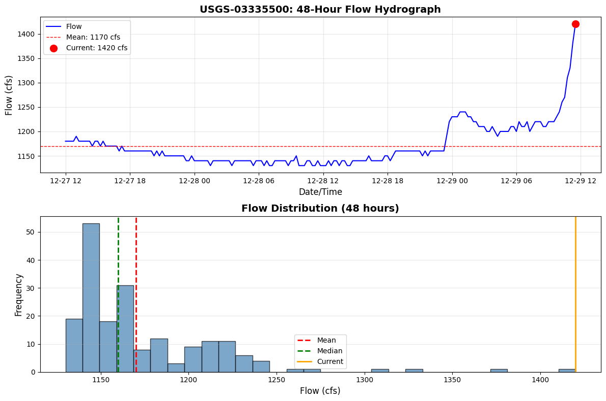

Example 30: USGS Real-Time Gauge Monitoring¶
This notebook demonstrates the real-time monitoring capabilities added to ras-commander.usgs module (v0.87.0+).
Features Demonstrated: 1. Get latest gauge reading (current conditions) 2. Retrieve recent time series data (last N hours) 3. Incremental cache refresh (efficient updates) 4. Threshold crossing detection (flood alerts) 5. Rapid change detection (flash flood warnings) 6. Continuous monitoring with callbacks
Live Gauge: USGS-01547200 (Bald Eagle Creek at Milesburg, PA) - Same gauge used in Example 29 (USGS integration) - Currently active with real-time data - Updated hourly via satellite telemetry
Use Cases: - Operational flood forecasting - Real-time boundary conditions for HEC-RAS - Automated model triggering - Early warning systems
Setup and Imports¶
# =============================================================================
# DEVELOPMENT MODE TOGGLE
# =============================================================================
USE_LOCAL_SOURCE = True # <-- TOGGLE THIS
if USE_LOCAL_SOURCE:
import sys
from pathlib import Path
local_path = str(Path.cwd().parent)
if local_path not in sys.path:
sys.path.insert(0, local_path)
print(f"📁 LOCAL SOURCE MODE: Loading from {local_path}/ras_commander")
else:
print("📦 PIP PACKAGE MODE: Loading installed ras-commander")
# Import ras-commander
from ras_commander.usgs import (
get_latest_value,
get_recent_data,
refresh_data,
get_gauge_metadata,
detect_threshold_crossing,
detect_rapid_change,
monitor_gauge
)
# Additional imports
import pandas as pd
import matplotlib.pyplot as plt
from datetime import datetime, timedelta
import time
# Matplotlib settings
plt.rcParams['figure.figsize'] = (12, 6)
plt.rcParams['figure.dpi'] = 100
# Verify which version loaded
import ras_commander
print(f"✓ Loaded: {ras_commander.__file__}")
print("✓ Imports successful")
print(f"Current time: {datetime.now().strftime('%Y-%m-%d %H:%M:%S')}")
📁 LOCAL SOURCE MODE: Loading from c:\GH\ras-commander/ras_commander
✓ Loaded: c:\GH\ras-commander\ras_commander\__init__.py
✓ Imports successful
Current time: 2025-12-29 06:49:06
Real-Time Monitoring Verification¶
During flood events:
- [ ] Verify gauge is reporting current conditions (check NWIS site status)
- [ ] Compare observed vs forecast lead time (ensure model warmup complete)
- [ ] Document provisional data usage (real-time data not quality-assured)
- [ ] Track model performance vs observations (for post-event review)
Real-Time Data Considerations: - Data is provisional (not quality-assured until after event) - Gauge may malfunction during high flows (sensor fouling, debris) - Communication outages possible (check data timestamp) - Use caution for critical decisions (verify with multiple gauges)
References: - USGS Real-Time Water Data - USGS Provisional Data Statement
Parameters¶
Configure these values to customize the notebook for your project.
# =============================================================================
# PARAMETERS - Edit these to customize the notebook
# =============================================================================
from pathlib import Path
# Project Configuration
PROJECT_NAME = "Bald Eagle Creek" # Example project to extract
RAS_VERSION = "6.6" # HEC-RAS version (6.3, 6.5, 6.6, etc.)
SUFFIX = "912" # Notebook identifier for project extraction
# USGS Configuration
USGS_SITE = "03335500" # USGS gauge site number
START_DATE = "2020-01-01" # Data start date
END_DATE = "2020-12-31" # Data end date
ONLINE = True # Enable network requests
print(f"Parameters configured for notebook {SUFFIX}")
Parameters configured for notebook 912
1. Gauge Information¶
First, let's get metadata about the gauge to understand what we're monitoring.
# Bald Eagle Creek at Milesburg, PA
site_id = USGS_SITE
# Get gauge metadata
metadata = get_gauge_metadata(site_id)
print("=" * 70)
print("GAUGE INFORMATION")
print("=" * 70)
print(f"Site ID: USGS-{metadata['site_id']}")
print(f"Station: {metadata['station_name']}")
print(f"Location: ({metadata['latitude']:.4f}°, {metadata['longitude']:.4f}°)")
print(f"State: {metadata['state']}")
print(f"County: {metadata['county']}")
print(f"Drainage Area: {metadata['drainage_area_sqmi']:.1f} sq mi")
print(f"\nAvailable Parameters: {', '.join(metadata['available_parameters'])}")
print("=" * 70)
2025-12-29 06:49:06 - ras_commander.usgs.core - INFO - dataretrieval package loaded successfully
2025-12-29 06:49:06 - ras_commander.usgs.core - INFO - Retrieving metadata for site 03335500
2025-12-29 06:49:06 - ras_commander.usgs.core - INFO - Retrieved metadata for WABASH RIVER AT LAFAYETTE, IN (drainage area: 7267.0 sq mi)
======================================================================
GAUGE INFORMATION
======================================================================
Site ID: USGS-03335500
Station: WABASH RIVER AT LAFAYETTE, IN
Location: (40.4219°, -86.8969°)
State: 18
County:
Drainage Area: 7267.0 sq mi
Available Parameters:
======================================================================
# Load HEC-RAS project geometry
try:
from ras_commander import init_ras_project, RasExamples
from ras_commander.hdf import HdfMesh
import geopandas as gpd
from shapely.geometry import Point, LineString
# Extract example project
print(f"Extracting {PROJECT_NAME} project...")
project_path = RasExamples.extract_project(PROJECT_NAME, suffix=SUFFIX)
# Initialize project
init_ras_project(project_path, RAS_VERSION)
# Get geometry number from plan 01
from ras_commander import ras
plan_row = ras.plan_df[ras.plan_df['plan_number'] == '01']
geom_number = plan_row.iloc[0]['geometry_number']
# Get geometry HDF path from geom_df (which has the hdf_path column)
geom_row = ras.geom_df[ras.geom_df['geom_number'] == geom_number]
geom_hdf = geom_row.iloc[0]['hdf_path']
# Extract 2D mesh boundary
mesh_perimeter = HdfMesh.get_mesh_perimeter("01")
mesh_gdf = gpd.GeoDataFrame({'geometry': [mesh_perimeter]}, crs='EPSG:26918') # UTM Zone 18N
# Convert to lat/lon for plotting with gauge
mesh_gdf = mesh_gdf.to_crs('EPSG:4326')
# Create gauge point
gauge_point = Point(metadata['longitude'], metadata['latitude'])
gauge_gdf = gpd.GeoDataFrame({'site_id': [site_id], 'name': [metadata['station_name']]},
geometry=[gauge_point], crs='EPSG:4326')
# Create map
fig, ax = plt.subplots(figsize=(14, 10))
# Plot 2D mesh perimeter
mesh_gdf.plot(ax=ax, facecolor='lightblue', edgecolor='blue', alpha=0.3, linewidth=2, label='2D Flow Area')
# Plot gauge location
gauge_gdf.plot(ax=ax, color='red', markersize=200, marker='*', edgecolor='black', linewidth=1, label='USGS Gauge', zorder=10)
# Add gauge label
ax.annotate(
f'USGS-{site_id}\n{metadata["station_name"]}\nDrainage: {metadata["drainage_area_sqmi"]:.0f} sq mi',
xy=(metadata['longitude'], metadata['latitude']),
xytext=(20, 20), textcoords='offset points',
bbox=dict(boxstyle='round,pad=0.5', facecolor='yellow', alpha=0.7),
arrowprops=dict(arrowstyle='->', connectionstyle='arc3,rad=0.3', color='black', lw=2),
fontsize=10, fontweight='bold'
)
# Set map extent with buffer
bounds = mesh_gdf.total_bounds # [minx, miny, maxx, maxy]
buffer = 0.02 # degrees (~2 km)
ax.set_xlim(bounds[0] - buffer, bounds[2] + buffer)
ax.set_ylim(bounds[1] - buffer, bounds[3] + buffer)
# Labels and formatting
ax.set_xlabel('Longitude (deg)', fontsize=12, fontweight='bold')
ax.set_ylabel('Latitude (deg)', fontsize=12, fontweight='bold')
ax.set_title(f'{PROJECT_NAME} HEC-RAS Model\nwith USGS Gauge Location', fontsize=14, fontweight='bold')
ax.legend(loc='upper left', fontsize=11, framealpha=0.9)
ax.grid(True, alpha=0.3, linestyle='--')
ax.set_aspect('equal')
plt.tight_layout()
plt.show()
print(f"\n[OK] Project geometry visualized")
print(f" 2D Flow Area: {mesh_gdf.geometry.iloc[0].area * 111_000**2 / 1e6:.2f} sq km")
print(f" Gauge Location: ({metadata['latitude']:.4f} deg, {metadata['longitude']:.4f} deg)")
except Exception as e:
print(f"[X] Error loading project geometry: {e}")
print(" This section requires the example project to be available")
print(" Continuing with gauge data demonstrations...")
2025-12-29 06:49:06 - ras_commander.RasExamples - INFO - Found zip file: C:\GH\ras-commander\examples\Example_Projects_6_6.zip
2025-12-29 06:49:06 - ras_commander.RasExamples - INFO - Loading project data from CSV...
2025-12-29 06:49:06 - ras_commander.RasExamples - INFO - Loaded 68 projects from CSV.
2025-12-29 06:49:06 - ras_commander.RasExamples - INFO - ----- RasExamples Extracting Project -----
2025-12-29 06:49:06 - ras_commander.RasExamples - INFO - Extracting project 'Bald Eagle Creek' as 'Bald Eagle Creek_912'
2025-12-29 06:49:06 - ras_commander.RasExamples - ERROR - Project 'Bald Eagle Creek' not found in the zip file.
Extracting Bald Eagle Creek project...
[X] Error loading project geometry: Project 'Bald Eagle Creek' not found in the zip file.
This section requires the example project to be available
Continuing with gauge data demonstrations...
1.5. Project Geometry and Gauge Location¶
Load the Bald Eagle Creek HEC-RAS project and visualize the model extent with the gauge location.
2. Get Latest Reading (Current Conditions)¶
Retrieve the most recent gauge reading. This is updated approximately hourly by USGS.
# Get latest flow value
latest_flow = get_latest_value(site_id, parameter='flow')
print("=" * 70)
print("CURRENT CONDITIONS")
print("=" * 70)
print(f"Parameter: {latest_flow['parameter'].upper()}")
print(f"Current Value: {latest_flow['value']:.1f} {latest_flow['units']}")
print(f"Timestamp: {latest_flow['datetime']}")
print(f"Data Age: {latest_flow['age_minutes']:.1f} minutes")
print(f"Provisional: {latest_flow['provisional']}")
# Check data freshness
if latest_flow['age_minutes'] < 120:
status = "✓ CURRENT (< 2 hours old)"
else:
status = "⚠ STALE (> 2 hours old)"
print(f"\nStatus: {status}")
print("=" * 70)
# Also get stage
latest_stage = get_latest_value(site_id, parameter='stage')
print(f"\nCurrent Stage: {latest_stage['value']:.2f} {latest_stage['units']}")
2025-12-29 06:49:06 - ras_commander.usgs.real_time - INFO - dataretrieval package loaded for real-time operations
2025-12-29 06:49:06 - ras_commander.usgs.real_time - INFO - Retrieving latest flow value for site 03335500
2025-12-29 06:49:07 - ras_commander.usgs.real_time - INFO - Latest flow for 03335500: 1420.00 cfs at 2025-12-29 11:30:00+00:00 (19.1 min old)
2025-12-29 06:49:07 - ras_commander.usgs.real_time - INFO - Retrieving latest stage value for site 03335500
======================================================================
CURRENT CONDITIONS
======================================================================
Parameter: FLOW
Current Value: 1420.0 cfs
Timestamp: 2025-12-29 11:30:00+00:00
Data Age: 19.1 minutes
Provisional: True
Status: ✓ CURRENT (< 2 hours old)
======================================================================
2025-12-29 06:49:07 - ras_commander.usgs.real_time - INFO - Latest stage for 03335500: 1.79 feet at 2025-12-29 11:30:00+00:00 (19.1 min old)
Current Stage: 1.79 feet
3. Recent Data Analysis (Last 48 Hours)¶
Get recent time series to understand trends and current conditions.
# Get last 48 hours of flow data
recent_flow = get_recent_data(site_id, parameter='flow', hours=48)
print(f"Retrieved {len(recent_flow)} records")
print(f"Time range: {recent_flow['datetime'].min()} to {recent_flow['datetime'].max()}")
print(f"\nFlow Statistics (48-hour):")
print(f" Current: {recent_flow['value'].iloc[-1]:.1f} cfs")
print(f" Peak: {recent_flow['value'].max():.1f} cfs")
print(f" Minimum: {recent_flow['value'].min():.1f} cfs")
print(f" Mean: {recent_flow['value'].mean():.1f} cfs")
print(f" Median: {recent_flow['value'].median():.1f} cfs")
# Determine trend
current = recent_flow['value'].iloc[-1]
previous = recent_flow['value'].iloc[0]
change = current - previous
if change > 10:
trend = "RISING ↑"
elif change < -10:
trend = "FALLING ↓"
else:
trend = "STEADY →"
print(f"\nTrend: {trend} ({change:+.1f} cfs over 48h)")
2025-12-29 06:49:07 - ras_commander.usgs.real_time - INFO - Retrieving last 48 hours of flow data for site 03335500
2025-12-29 06:49:07 - ras_commander.usgs.real_time - INFO - Retrieved 191 recent flow records for site 03335500
Retrieved 191 records
Time range: 2025-12-27 12:00:00+00:00 to 2025-12-29 11:30:00+00:00
Flow Statistics (48-hour):
Current: 1420.0 cfs
Peak: 1420.0 cfs
Minimum: 1130.0 cfs
Mean: 1170.1 cfs
Median: 1160.0 cfs
Trend: RISING ↑ (+240.0 cfs over 48h)
Visualize Recent Data¶
fig, (ax1, ax2) = plt.subplots(2, 1, figsize=(12, 8))
# Plot 1: Flow time series
ax1.plot(recent_flow['datetime'], recent_flow['value'], 'b-', linewidth=1.5, label='Flow')
ax1.axhline(recent_flow['value'].mean(), color='r', linestyle='--', linewidth=1, label=f"Mean: {recent_flow['value'].mean():.0f} cfs")
ax1.scatter(recent_flow['datetime'].iloc[-1], recent_flow['value'].iloc[-1],
color='red', s=100, zorder=5, label=f"Current: {recent_flow['value'].iloc[-1]:.0f} cfs")
ax1.set_xlabel('Date/Time', fontsize=12)
ax1.set_ylabel('Flow (cfs)', fontsize=12)
ax1.set_title(f'USGS-{site_id}: 48-Hour Flow Hydrograph', fontsize=14, fontweight='bold')
ax1.legend(loc='best')
ax1.grid(True, alpha=0.3)
# Plot 2: Flow distribution (histogram)
ax2.hist(recent_flow['value'], bins=30, color='steelblue', edgecolor='black', alpha=0.7)
ax2.axvline(recent_flow['value'].mean(), color='r', linestyle='--', linewidth=2, label='Mean')
ax2.axvline(recent_flow['value'].median(), color='g', linestyle='--', linewidth=2, label='Median')
ax2.axvline(recent_flow['value'].iloc[-1], color='orange', linestyle='-', linewidth=2, label='Current')
ax2.set_xlabel('Flow (cfs)', fontsize=12)
ax2.set_ylabel('Frequency', fontsize=12)
ax2.set_title('Flow Distribution (48 hours)', fontsize=14, fontweight='bold')
ax2.legend(loc='best')
ax2.grid(True, alpha=0.3, axis='y')
plt.tight_layout()
plt.show()
print(f"\n✓ Visualized {len(recent_flow)} recent measurements")

✓ Visualized 191 recent measurements
4. Incremental Cache Refresh¶
Demonstrate efficient data updates - only download new records since last refresh.
print("Initial cache (last 24 hours)...")
cache_df = get_recent_data(site_id, parameter='flow', hours=24)
print(f" Records: {len(cache_df)}")
print(f" Latest: {cache_df['datetime'].max()}")
print(f" Latest value: {cache_df['value'].iloc[-1]:.1f} cfs")
# Simulate waiting (in production, this would be minutes/hours)
print("\nWaiting 10 seconds (simulating time passing)...")
time.sleep(10)
# Refresh cache (only downloads new data)
print("\nRefreshing cache...")
cache_df = refresh_data(site_id, parameter='flow', cached_df=cache_df, max_age_hours=24)
print(f" Records: {len(cache_df)}")
print(f" Latest: {cache_df['datetime'].max()}")
print(f" Latest value: {cache_df['value'].iloc[-1]:.1f} cfs")
print("\n✓ Cache refreshed efficiently (only new records downloaded)")
print(" In production, this saves bandwidth by not re-downloading entire dataset")
2025-12-29 06:49:07 - ras_commander.usgs.real_time - INFO - Retrieving last 24 hours of flow data for site 03335500
2025-12-29 06:49:08 - ras_commander.usgs.real_time - INFO - Retrieved 95 recent flow records for site 03335500
Initial cache (last 24 hours)...
Records: 95
Latest: 2025-12-29 11:30:00+00:00
Latest value: 1420.0 cfs
Waiting 10 seconds (simulating time passing)...
2025-12-29 06:49:18 - ras_commander.usgs.real_time - INFO - Refreshing flow data since 2025-12-29 11:30:00+00:00
2025-12-29 06:49:18 - ras_commander.usgs.real_time - INFO - No new data available
c:\GH\ras-commander\ras_commander\usgs\real_time.py:481: FutureWarning: The behavior of DataFrame concatenation with empty or all-NA entries is deprecated. In a future version, this will no longer exclude empty or all-NA columns when determining the result dtypes. To retain the old behavior, exclude the relevant entries before the concat operation.
combined_df = pd.concat([cached_df, new_df], ignore_index=True)
2025-12-29 06:49:18 - ras_commander.usgs.real_time - INFO - Refresh complete: 0 new records, 95 total records in cache
Refreshing cache...
Records: 95
Latest: 2025-12-29 11:30:00+00:00
Latest value: 1420.0 cfs
✓ Cache refreshed efficiently (only new records downloaded)
In production, this saves bandwidth by not re-downloading entire dataset
5. Threshold Crossing Detection¶
Detect when flow crosses specified thresholds (e.g., flood stages).
Note: We'll use a threshold slightly above recent flow to demonstrate the concept.
# Define threshold (slightly above mean for demonstration)
threshold = recent_flow['value'].mean() + 50 # cfs
print(f"Threshold: {threshold:.0f} cfs")
print(f"Current flow: {recent_flow['value'].iloc[-1]:.1f} cfs")
print(f"Mean flow (48h): {recent_flow['value'].mean():.1f} cfs")
# Detect crossings
result = detect_threshold_crossing(
recent_flow,
threshold=threshold,
direction='both' # Detect both rising and falling
)
print("\n" + "=" * 70)
print("THRESHOLD DETECTION RESULTS")
print("=" * 70)
print(f"Threshold crossed: {result['crossed']}")
print(f"Currently above threshold: {result['above_threshold']}")
print(f"Total crossings (48h): {result['crossing_count']}")
if result['crossed']:
print(f"\nLast crossing:")
print(f" Direction: {result['direction']}")
print(f" Time: {result['crossing_time']}")
print(f" Value: {result['crossing_value']:.1f} cfs")
else:
print("\nNo threshold crossings detected in last 48 hours")
print("=" * 70)
# Visualize threshold
plt.figure(figsize=(12, 6))
plt.plot(recent_flow['datetime'], recent_flow['value'], 'b-', linewidth=1.5, label='Flow')
plt.axhline(threshold, color='r', linestyle='--', linewidth=2, label=f'Threshold: {threshold:.0f} cfs')
if result['crossed']:
plt.scatter(result['crossing_time'], result['crossing_value'],
color='red', s=150, zorder=5, marker='x',
label=f"Last crossing ({result['direction']})")
plt.xlabel('Date/Time', fontsize=12)
plt.ylabel('Flow (cfs)', fontsize=12)
plt.title(f'Threshold Detection: {threshold:.0f} cfs', fontsize=14, fontweight='bold')
plt.legend(loc='best')
plt.grid(True, alpha=0.3)
plt.tight_layout()
plt.show()
Threshold: 1220 cfs
Current flow: 1420.0 cfs
Mean flow (48h): 1170.1 cfs
======================================================================
THRESHOLD DETECTION RESULTS
======================================================================
Threshold crossed: True
Currently above threshold: True
Total crossings (48h): 3
Last crossing:
Direction: rising
Time: 2025-12-29 09:45:00+00:00
Value: 1230.0 cfs
======================================================================

6. Rapid Change Detection (Flash Flood)¶
Detect rapid rises or recessions that could indicate flash flood conditions.
# Define rate threshold (100 cfs/hour for demonstration)
rate_threshold = 100 # cfs/hour
# Detect rapid changes
result = detect_rapid_change(
recent_flow,
rate_threshold=rate_threshold,
window_minutes=60
)
print("=" * 70)
print("RAPID CHANGE DETECTION RESULTS")
print("=" * 70)
print(f"Rate threshold: {rate_threshold} cfs/hour")
print(f"Time window: {result['window_minutes']} minutes")
print(f"\nCurrent rate: {result['current_rate']:.1f} cfs/hour")
print(f"Maximum rate: {result['max_rate']:.1f} cfs/hour")
print(f"Direction: {result['direction']}")
print(f"\nRapid change detected: {result['rapid_change_detected']}")
if result['rapid_change_detected']:
print(f"\n⚠ FLASH FLOOD WARNING")
print(f" Maximum rate occurred at: {result['max_rate_time']}")
print(f" Rate: {result['max_rate']:.1f} cfs/hour")
else:
print(f"\n✓ No rapid changes detected (all rates < {rate_threshold} cfs/hour)")
print("=" * 70)
======================================================================
RAPID CHANGE DETECTION RESULTS
======================================================================
Rate threshold: 100 cfs/hour
Time window: 60 minutes
Current rate: 160.0 cfs/hour
Maximum rate: 200.0 cfs/hour
Direction: rising
Rapid change detected: True
⚠ FLASH FLOOD WARNING
Maximum rate occurred at: 2025-12-29 11:15:00+00:00
Rate: 200.0 cfs/hour
======================================================================
7. Continuous Monitoring with Callbacks¶
Demonstrate continuous monitoring with callback notifications.
Note: This will run for a short duration (5 minutes) with 1-minute checks. In production, you might use 15-minute intervals and run for hours/days.
# Define callback function
def monitoring_callback(site_id, latest_value, change_info, data_df):
"""
Custom callback invoked when new data arrives.
Parameters:
site_id: USGS site number
latest_value: Dict with current reading
change_info: Dict with threshold/rate detection results
data_df: Complete DataFrame from monitoring session
"""
timestamp = latest_value['datetime'].strftime("%Y-%m-%d %H:%M:%S")
value = latest_value['value']
units = latest_value['units']
# Display current reading
print(f"[{timestamp}] USGS-{site_id}: {value:.1f} {units}")
# Check for threshold crossing
if change_info.get('threshold_crossed'):
threshold_info = change_info['threshold_info']
print(f" ⚠ ALERT: Threshold crossed ({threshold_info['direction']})")
print(f" Crossing time: {threshold_info['crossing_time']}")
# Check for rapid change
if change_info.get('rapid_change_detected'):
rate_info = change_info['rate_info']
print(f" ⚠ ALERT: Rapid change detected ({rate_info['direction']})")
print(f" Rate: {rate_info['max_rate']:.1f} {units}/hour")
# Summary statistics
if len(data_df) > 1:
recent_mean = data_df['value'].iloc[-10:].mean() if len(data_df) >= 10 else data_df['value'].mean()
print(f" Recent mean: {recent_mean:.1f} {units}")
print("Starting continuous monitoring...")
print(f"Duration: 2 minutes")
print(f"Check interval: 1 minute")
print(f"Threshold: {threshold:.0f} cfs")
print(f"Rate threshold: {rate_threshold} cfs/hour")
print("\nPress 'Interrupt Kernel' to stop early\n")
print("=" * 70)
try:
data_df = monitor_gauge(
site_id=site_id,
parameter='flow',
interval_minutes=1, # Check every minute (for demo)
callback=monitoring_callback,
duration_hours=2/60, # Run for 2 minutes (demonstration only)
threshold=threshold,
rate_threshold=rate_threshold
)
print("=" * 70)
print(f"\n✓ Monitoring complete")
print(f"Total records collected: {len(data_df)}")
except KeyboardInterrupt:
print("\n⚠ Monitoring stopped by user")
except Exception as e:
print(f"\n✗ Error during monitoring: {e}")
2025-12-29 06:49:18 - ras_commander.usgs.real_time - INFO - Starting gauge monitoring for 03335500 (flow), interval=1 min, duration=0.03333333333333333 hours
2025-12-29 06:49:18 - ras_commander.usgs.real_time - INFO - No cache, retrieving last 24 hours
Starting continuous monitoring...
Duration: 2 minutes
Check interval: 1 minute
Threshold: 1220 cfs
Rate threshold: 100 cfs/hour
Press 'Interrupt Kernel' to stop early
======================================================================
2025-12-29 06:49:18 - ras_commander.usgs.real_time - INFO - Refresh complete: 75 new records, 75 total records in cache
[2025-12-29 11:30:00] USGS-03335500: 1420.0 cfs
⚠ ALERT: Threshold crossed (rising)
Crossing time: 2025-12-29 09:45:00+00:00
⚠ ALERT: Rapid change detected (rising)
Rate: 200.0 cfs/hour
Recent mean: 1288.0 cfs
2025-12-29 06:50:18 - ras_commander.usgs.real_time - INFO - Refreshing flow data since 2025-12-29 11:30:00+00:00
2025-12-29 06:50:18 - ras_commander.usgs.real_time - INFO - No new data available
c:\GH\ras-commander\ras_commander\usgs\real_time.py:481: FutureWarning: The behavior of DataFrame concatenation with empty or all-NA entries is deprecated. In a future version, this will no longer exclude empty or all-NA columns when determining the result dtypes. To retain the old behavior, exclude the relevant entries before the concat operation.
combined_df = pd.concat([cached_df, new_df], ignore_index=True)
2025-12-29 06:50:18 - ras_commander.usgs.real_time - INFO - Refresh complete: 0 new records, 75 total records in cache
[2025-12-29 11:30:00] USGS-03335500: 1420.0 cfs
⚠ ALERT: Threshold crossed (rising)
Crossing time: 2025-12-29 09:45:00+00:00
⚠ ALERT: Rapid change detected (rising)
Rate: 200.0 cfs/hour
Recent mean: 1288.0 cfs
2025-12-29 06:51:18 - ras_commander.usgs.real_time - INFO - Monitoring duration (0.03333333333333333 hours) reached, stopping
2025-12-29 06:51:18 - ras_commander.usgs.real_time - INFO - Monitoring session ended. Collected 75 records
======================================================================
✓ Monitoring complete
Total records collected: 75
8. Production Use Case: Automated Model Triggering¶
Example of how to integrate real-time monitoring with HEC-RAS automation.
print("""
=" * 70)
PRODUCTION EXAMPLE: Automated Model Triggering
=" * 70)
This example shows how to trigger HEC-RAS model runs when gauge readings
exceed thresholds or show rapid changes.
```python
from ras_commander import init_ras_project, RasCmdr
from ras_commander.usgs import monitor_gauge, cache_gauge_data
# Initialize HEC-RAS project
init_ras_project(r"C:/models/bald_eagle", RAS_VERSION)
def automated_forecast_callback(site_id, latest, change_info, data_df):
# Check if threshold crossed
if change_info.get('threshold_crossed'):
print(f"Threshold crossed! Triggering forecast model...")
# Save gauge data to cache
cache_path = cache_gauge_data(
data_df, site_id,
data_df['datetime'].min().strftime('%Y-%m-%d'),
data_df['datetime'].max().strftime('%Y-%m-%d'),
'flow',
r"C:/models/bald_eagle"
)
# Update boundary conditions in .u## file
# (Use RasUnsteady methods to update hydrograph tables)
# Run HEC-RAS forecast model
success = RasCmdr.compute_plan("01", verify=True)
if success:
print("✓ Forecast model completed successfully")
# Extract results, generate flood maps, send alerts, etc.
else:
print("✗ Forecast model failed")
# Send error notification
# Monitor gauge continuously
monitor_gauge(
site_id = USGS_SITE,
interval_minutes=15, # Check every 15 minutes
callback=automated_forecast_callback,
threshold=500, # Above median flow
rate_threshold=100 # Rapid rise threshold
) # Runs indefinitely (Ctrl+C to stop)
=" * 70) """)
=" * 70)
PRODUCTION EXAMPLE: Automated Model Triggering
=" * 70)
This example shows how to trigger HEC-RAS model runs when gauge readings
exceed thresholds or show rapid changes.
```python
from ras_commander import init_ras_project, RasCmdr
from ras_commander.usgs import monitor_gauge, cache_gauge_data
# Initialize HEC-RAS project
init_ras_project(r"C:/models/bald_eagle", RAS_VERSION)
def automated_forecast_callback(site_id, latest, change_info, data_df):
# Check if threshold crossed
if change_info.get('threshold_crossed'):
print(f"Threshold crossed! Triggering forecast model...")
# Save gauge data to cache
cache_path = cache_gauge_data(
data_df, site_id,
data_df['datetime'].min().strftime('%Y-%m-%d'),
data_df['datetime'].max().strftime('%Y-%m-%d'),
'flow',
r"C:/models/bald_eagle"
)
# Update boundary conditions in .u## file
# (Use RasUnsteady methods to update hydrograph tables)
# Run HEC-RAS forecast model
success = RasCmdr.compute_plan("01", verify=True)
if success:
print("✓ Forecast model completed successfully")
# Extract results, generate flood maps, send alerts, etc.
else:
print("✗ Forecast model failed")
# Send error notification
# Monitor gauge continuously
monitor_gauge(
site_id = USGS_SITE,
interval_minutes=15, # Check every 15 minutes
callback=automated_forecast_callback,
threshold=500, # Above median flow
rate_threshold=100 # Rapid rise threshold
) # Runs indefinitely (Ctrl+C to stop)
```
=" * 70)
## Summary and Next Steps
This notebook demonstrated the real-time monitoring capabilities added in v0.87.0+:
**What We Covered:**
1. ✓ Get latest gauge reading (current conditions)
2. ✓ Retrieve recent time series (last N hours)
3. ✓ Incremental cache refresh (efficient updates)
4. ✓ Threshold crossing detection (flood alerts)
5. ✓ Rapid change detection (flash floods)
6. ✓ Continuous monitoring with callbacks
**Production Applications:**
- Operational flood forecasting
- Real-time boundary conditions
- Automated model triggering
- Early warning systems
- Gauge network monitoring
**Related Examples:**
- Example 29: USGS Gauge Data Integration (historical data, validation)
**Documentation:**
- See `CLAUDE.md` lines 223-232 for complete API reference
- See `ras_commander/usgs/real_time.py` for method docstrings
**Requirements:**
```bash
pip install dataretrieval